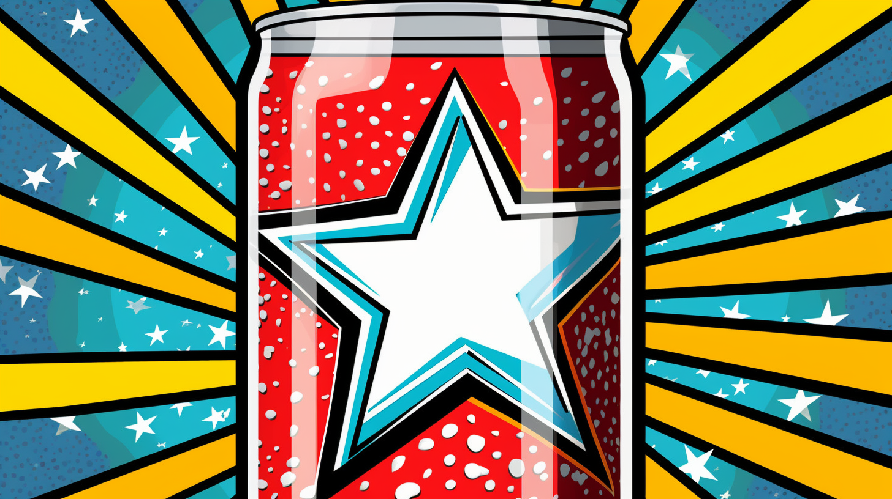

E5_RC001_SODA-POP
01- Texto
Reading Comprehension (RC-001)

"SODA POP"
Soda pop has an interesting story. The story begins with mineral water. Mineral water comes from springs. In many places, people take baths in mineral water. They say washing with mineral water is good for their health. Some say drinking mineral water is also good for people.
Mineral water has bubbles in it. People learned to make bubbly water in the 1770’s. They added CO2 to water with a machine to make the water bubbly. The machine was the “soda fountain.” They called the new bubbly water “soda water” or “carbonated water.”
American drug stores sold soda water. Druggists put good-tasting flavors in the soda water. People drank soda water for their health. Many people liked it for its good flavor. Many people went to the soda fountain every day. Most soda fountains were in drug stores or ice cream shops.
In the early 1900’s, people bought soda water in bottles. Later in the 1900’s, people started to buy flavored soda water in cans. Now it is sold in many containers in grocery stores and other places where food is sold. Some people call it “pop.” Some say “soda.” Other people call it “cola,” “tonic,” or “soda pop.”
Obra publicada con Licencia Creative Commons Reconocimiento Compartir igual 4.0